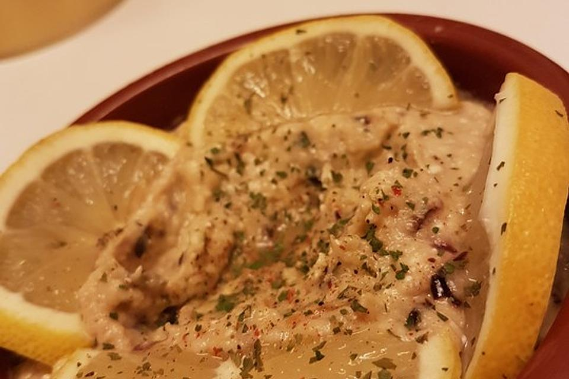

Auberginen dip★
 2-3 servings
2-3 servings 45min
45min Source
Source Meat
Meat
Herzhafter Auberginen dip zu Rohkost oder auf Brot

2Auberginen1/3Bund Petersilie100gFeta3 ELOlivenöl3Knoblauchzehen1Handvoll Walnüsse3-5 ELLimettensaft
Auberginen in Scheiben schneiden und auf einem Backblech ausbreiten. Mit Salz, Pfeffer, Oregano und Olivenöl würzen und bei 200° Umluft ~30min Knusprig backen. Die Auberginen mit einem Messer fein hacken, und mit den anderen Zutaten gründlich verrühren.